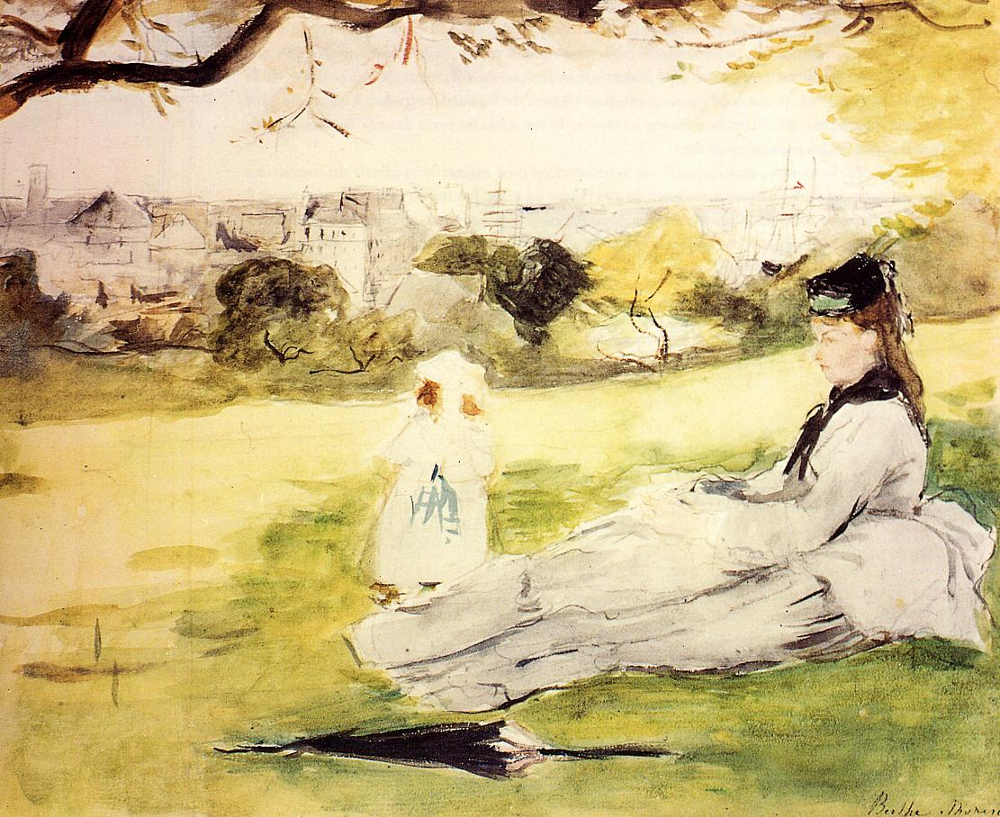

Tags: fields-and-plains, leisure-and-sleep
Style: Impressionism
Artist: Morisot Berthe
Title: Woman and Child Seated in a Meadow
Year: 1871
Genre: genre painting
Categories: American_egret (10.8%); fountain (6.8%); cliff (5.7%); lakeside (3.4%); American_alligator (2.9%)
Similar Images: